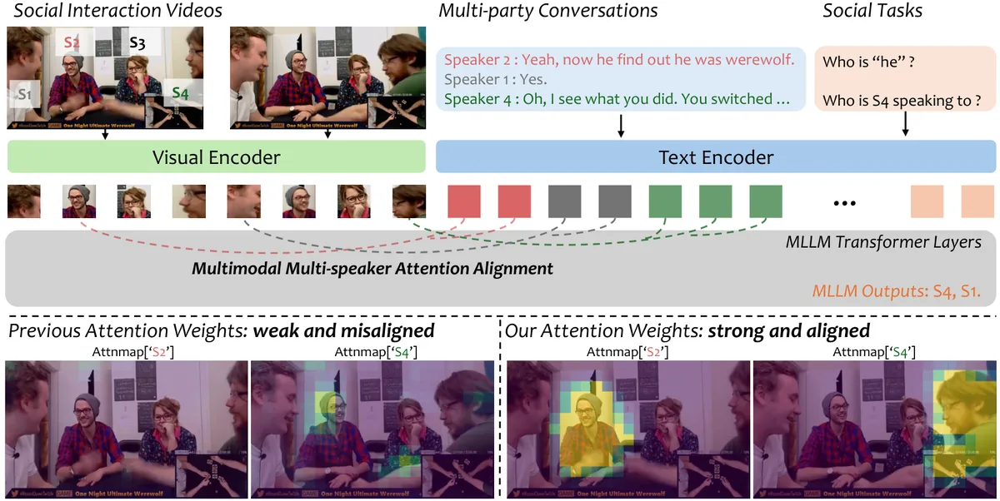

Multi-speaker Attention Alignment for Multimodal Social Interaction

In multi-speaker scenes, MLLMs struggle to associate each person's appearance with what they say. We identify the attention heads responsible for cross-modal grounding and inject a social-aware attention bias derived from speaker locations, without any additional training.
State of the art on four social tasks across TVQA+, MMSI, and OnlineMMSI, with LLaVA-NeXT-Video, Qwen2.5-VL, and InternVL3.